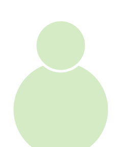
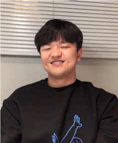
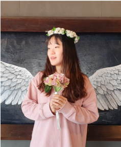
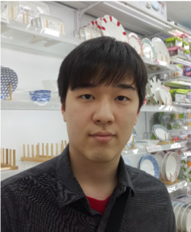
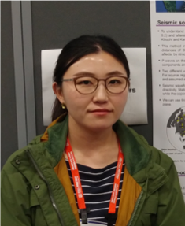

People
who are studying seismology at geophysics@pknu
Professor
|  |
Kang, Tae-Seob Ph.D.
Professor of Seismology and Geophysicstskang(at)pknu.ac.kr |
Researcher
|
Yoo, Hyun Jae Ph.D.
Seismologistyoonow(at)gmail.com Research Topics: Seismotectonics of Antarctica
Seismic hazard in the Korean Peninsula
|
|
Kim, Roungyi M.S.
Researcher, Lab Administratorroungyi(at)gmail.com Research Topics: Earthquake early warning
|
Chai, Gyeongdon M.S.
Researchercgd1605(at)gmail.com Research Topics: Earthquake source parameters
|
Student
|  |
Heo, Dabeen M.S.
Ph.D. Studenthdb4812(at)gmail.com Research Topics: Seismic waveform modeling
Seismic network management
|
Ahn, Byeong Seok M.S.
Ph.D. Student11196abs(at)gmail.com Research Topics: Strong ground motions
Seismic source parameters
|
|  |
Kim, Minog M.S.
Ph.D. Studentminog19(at)gmail.com Research Topics: Crustal structure from ray-traveltime forward modeling
|
|
Kim, Miji B.S.
M.S. Studentmiji61759(at)gmail.com Research Topics: Uncertainty of seismicity
|
Seol, DongHyeop B.S.
M.S. Studentdonghyeop0619(at)gmail.com Research Topics: Rupture directivity
|
|
Kwon, Joa B.S.
M.S. Studentkja9022(at)gmail.com Research Topics: Crustal structure from seismic tomography
|
Kwon, Giback B.S.
M.S. Studentgibackk96(at)gmail.com Research Topics: TBD
|
|
Choi, Yujeong B.S.
M.S. Studentchldbwjd10052(at)gmail.com Research Topics: TBD
|
Baek, June B.S.
M.S. Student6benero(at)gmail.com Research Topics: TBD
|
|  |
Jung, Jin Oh
B.S. Studentjinojino0426(at)gmail.com Research Topics: Earthquake analysis
|
Alumni
|
Shrestha, Suchita Ph.D.
Senior Divisional GeologistDepartment of Mines and Geology Government of Nepal |
 |
Kim, Satbyul Ph.D.
Postdoctoral ResearcherKangwon National University |
|
Witek, Michael Ph.D.
Postdoctoral ResearcherKangwon National University Fulbright U.S. Student Award to Korea (2014-2015) Ph.D., Northwestern University, 2016 |
Jeong, SeongJu Ph.D.
Postdoctoral ResearcherSouthern Methodist University M.S., Pukyong National University, 2013 Ph.D., Southern Methodist University, 2020 |
|
Park, Jechan M.S.
ResearcherKEPCO E&C |
Kim, Minook M.S.
ResearcherKorea Institute of Nuclear Safety |
|
Song, Geun Young M.S.
ResearcherKorea Meteorological Administration |
Kim, Eunmi M.S.
OfficerKorea Meteorological Administration |
|
Jang, Hyun Ho M.S.
ResearcherGachisolution |
Lee, Heekyoung M.S.
OfficerPohang City |
|
Park, Hyejin M.S.
ResearcherKorea Meteorological Administration |
Park, Euna M.S.
ResearcherKorea Meteorological Administration |
|
Kong, ChangHwan M.S.
OfficerMinistry of National Defense |
Rhee, Seunggu M.S.
Ph.D. StudentM.S. in Yonsei University Research Topics: Coseismic deformation
Seismic discrimination
|